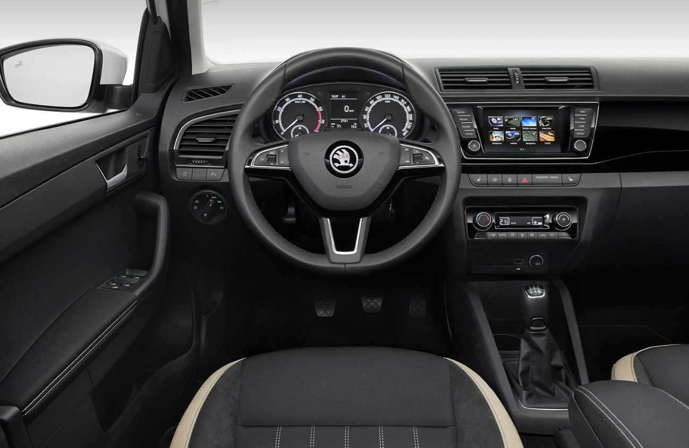
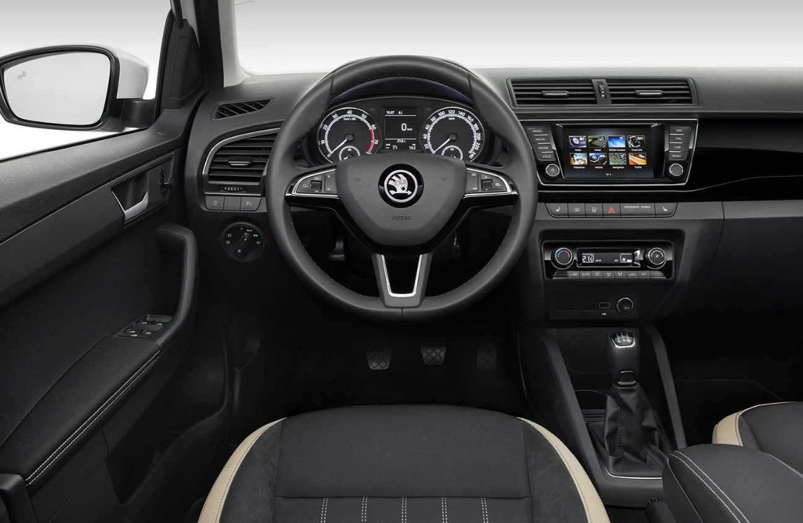

Probleme frecvente:
Jetta Mk6 sunt masini fiabile, daca au avut schimburile facute la timp.Probleme, cheltuieli care pot aparea în viitor la o mașină second-hand:distribuția, ambreiajul, pompa de apă, valva pcv, dpf, dupa 2013 s-a rezolvat și problema consumului de ulei, cateva probleme legate de transmisia manuală.
Din anul 2009 Jetta vine cu park assist, suspensii reglabile pe duritate, senzori de presiune, temperatură ulei, navigație,încălzire în scaune, alarmă cu senzor de mișcare, lumini automate și senzori de ploaie.
Probleme generale:Pentru motoarele diesel ramane in continuare problema volantei cu masa dubla care se uzeaza mai repede decat ti-ai dori. Asta inseamna atat uzura masinii cat si uzura portofelului, iar in cazurile exceptionale volanta poate lua si cutia de viteze cu ea.
Probleme serioase la franele pe spate, unde discurile si placutele ori ruginesc ori se uzeaza dupa doar 50 de metri de condus. Asta se intampla pentru ca soferul tipic de Passat B8 mergea prea incet ca sa puna franele spate la treaba.
O tema recurenta de pe Passat B6 revine si pe generatia a 8-a si anume la frana electronica de parcare. Iarasi sunt probleme la frana electronica si in special sunt probleme la cele cu functia de Auto-Hold.
Cutia automata DSG7 DQ200 iarasi e subiectul problemelor. Mare grija la schimbul de ulei si filtru, Mecatronicul se mai poate strica.
Aveți grijă la dotări,pentru ca de cele mai multe ori, anunturile cu aceste mașini nu sunt cele mai verosimile.
Poze informative:


 
